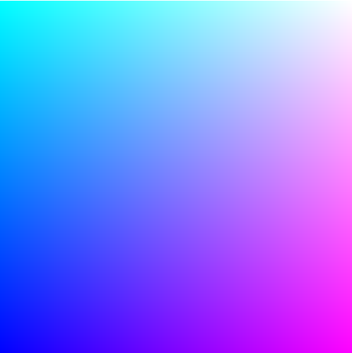
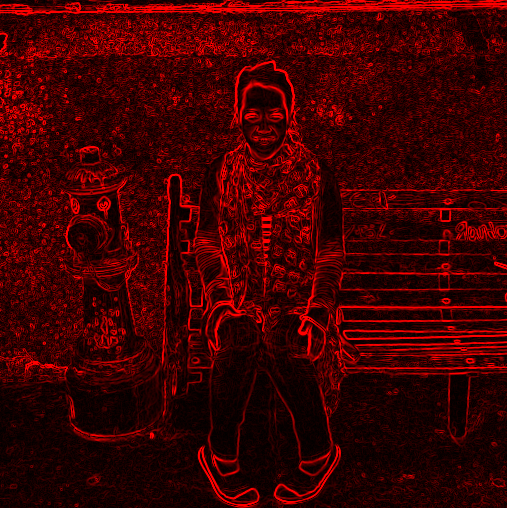
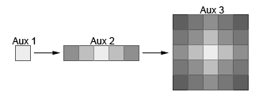
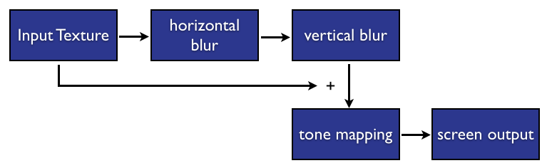

Image and video post-processing with WebGL
Introduction
WebGL is not only about rendering 3D graphics. While WebGL allows you to create stunning 3D, it can also be used for 2D rendering. One common use-case is pixel manipulation, or image post-processing, which allows us to add blur or other filter effects to images.
In this article we'll look at what image post-processing is and how to use the raw WebGL API to apply real-time post-processing effects on images and other media like video, <canvas>, etc.
While this article is not strictly related to previous WebGL articles on dev.opera, some familiarity with the WebGL API is needed to get the most out of this. In particular, knowledge about the rendering pipeline (explained in An introduction to WebGL) will be useful; in addition, if this is your first time diving into the raw WebGL API, it is recommended that you read Erik Möller's articles on raw WebGL first.
Post-Processing
Post-Processing is a technique used in graphics that allows you to take a current input texture, and manipulate its pixels to produce a transformed image. This can be used to apply shiny effects like volumetric lighting, or any other filter type effect you've seen in applications like Photoshop or Instagram.
The good news is that the WebGL API lets you apply all these effects directly via the GPU. The fragment shader is a piece of GLSL code that is called for each pixel of the rasterized image. This means for example that if we render a simple 2D rectangle on the screen with WebGL, the fragment shader code will be applied to each pixel of the rectangle. Having GLSL code doing pixel manipulation also opens the door to real-time post-processing effects, since all the complex pixel manipulation is done in the GPU.
Drawing a Rectangle
The first step to do then is to render a simple 2D rectangle on the screen, and then play a bit with the fragment shader code and see what happens. Check out my simple shaded rectangle example (also seen in Figure 1). You'll find the code for the JavaScript that does all the heavy lifting example file below the canvas in the example page.

Figure 1: A simple quad in which some color interpolation is being performed to create a linear gradient.
To create this example, the first step was to check for WebGL availability and then create a program out of two shaders, a vertex and a fragment shader:
//check support
if (!supportsWebGL()) {
$('log').innerHTML = 'Your browser doesn\'t seem to support WebGL.';
return;
}
//get context
var canvas = $('webgl-canvas'),
gl = getWebGLContext(canvas);
//create a program
createProgramFromURIs(gl, {
vsURI: 'shaders/simple.vs',
fsURI: 'shaders/simple.fs',
onComplete: function(program) {
render(program);
}
});Next, we send some information to the shader program: the size of the screen as a uniform, and also the vertices that make up a 2D rectangle via an attribute buffer. Uniforms and attributes are covered in the raw WebGL 101 series. If the rectangle's vertices go from (-1, -1) to (1, 1), then the rectangle will cover the whole canvas. Here's the code for setting the uniforms and binding the vertex buffer:
var sizeLocation = gl.getUniformLocation(program, 'size'),
positionLocation = gl.getAttribLocation(program, 'position'),
buffer = gl.createBuffer(),
vertices = [-1, -1, 1, -1, -1, 1, -1, 1, 1, -1, 1, 1];
//set uniform size data
gl.uniform1f(sizeLocation, canvas.width);
//set position attribute data
gl.bindBuffer(gl.ARRAY_BUFFER, buffer);
gl.bufferData(gl.ARRAY_BUFFER, new Float32Array(vertices), gl.STATIC_DRAW);
gl.enableVertexAttribArray(positionLocation);
gl.vertexAttribPointer(positionLocation, 2, gl.FLOAT, false, 0, 0);And action! A rectangle is rendered. In order to change the color of the rectangle we use the fragment shader code. In this case we just use some simple color interpolation. Here's the simple.fs fragment shader code:
uniform float size;
void main(void) {
vec2 colors = gl_FragCoord.xy / size;
gl_FragColor = vec4(colors.xy, 1, 1);
}In this code we grab the (x, y) coordinates of the special variable gl_FragCoord, which holds the coordinates of the pixel being evaluated, and divide it by the size of the canvas so we bring the coordinates to the (0, 1) space. Then we set the special variable gl_FragColor that holds the color of the rendered pixel in RGBA format with red and green matching (x, y), then set full blue color (1) and full alpha (1).
Now in order to do *image* (post-)processing we are going to need an image. Let's see how we can do this in WebGL.
Image Post-Processing
In this example we will take a webcam input (a static image would also do just fine), and manipulate its pixels to do some edge-detection using the Sobel operator. The Sobel operator consists of what's called a convolution operation, which in this particular case can be explained as a weighted sum of the current pixel being evaluated and its surrounding pixels. This weighted sum operation can be performed via a matrix.
Note: For information on how to grab data from the camera, read getUserMedia: accessing the camera and privacy UI.
Our edge detection example looks like Figure 2:

Figure 2: Post processing an image in WebGL using Sobel-based edge detection.
In this example we need to provide an image to the GPU so that we can do some pixel manipulation on it. This is done by creating a texture object and setting the image to it. Here's how you create a texture:
var texture = gl.createTexture();
//set properties for the texture
gl.bindTexture(gl.TEXTURE_2D, texture);
//these properties let you upload textures of any size
gl.texParameteri(gl.TEXTURE_2D, gl.TEXTURE_WRAP_S, gl.CLAMP_TO_EDGE);
gl.texParameteri(gl.TEXTURE_2D, gl.TEXTURE_WRAP_T, gl.CLAMP_TO_EDGE);
//these determine how interpolation is made if the image is being scaled up or down
gl.texParameteri(gl.TEXTURE_2D, gl.TEXTURE_MIN_FILTER, gl.NEAREST);
gl.texParameteri(gl.TEXTURE_2D, gl.TEXTURE_MAG_FILTER, gl.NEAREST);
gl.bindTexture(gl.TEXTURE_2D, null);Now comes arguably the coolest function in the WebGL API, texImage2D, which lets you set data to the texture object so that it can be later manipulated by the fragment shader. The cool thing about texImage2D is that it provides different function signatures, and thus you can upload not only an HTMLImage to it, but also HTMLVideo, HTMLCanvas and ImageData elements. You can even upload raw typed arrays to it, provided that you specify the dimensions of the image. texImage2D is the only nexus between a WebGL canvas and other elements in your HTML document.
Uploading the video requires binding the created texture first, and then using texImage2D:
gl.bindTexture(gl.TEXTURE_2D, texture);
gl.texImage2D(gl.TEXTURE_2D, 0, gl.RGBA, gl.RGBA, gl.UNSIGNED_BYTE, video);texImage2D takes as first argument the type of the target texture, in this case a 2D texture so TEXTURE_2D. The second argument specifies the level of detail of the image — in this case we'll use 0, which is the base image level. texImage2D also takes the internal image format type, i.e. the number of color components in the texture, in this case RGBA. The next argument is the pixel data format, in this case also RGBA. The next argument describes how the RGBA values in the image are stored. For this image the color components are stored as numbers from 0 to 255, or UNSIGNED_BYTEs. The last argument is the actual HTMLVideo element. You can read more about the texImage2D function here.
Multiple Post-Processing Passes
Sometimes we'd like to apply more than one transformation to the image and we cannot combine those on the same fragment shader. One classic example of this is the Bloom effect. The Bloom effect first blurs the input image (e.g. with a gaussian blur), and then blends the blurred image with the original image to provide something like a neon effect. For the blurring stage a straight gaussian blur would average the current pixel value with many levels of surrounding pixels. This is very costly (even for a fragment shader), and thus the blur effect is split into two passes: one pass that averages the current pixel with neighboring pixels in the x-axis, and then a second pass that does the same thing for the y-axis (see Figure 3).

Figure 3: An image with a bloom effect applied to it.
In other words, with two post-processing passes we reduce the complexity of a per pixel algorithm from O(N^2) to O(2N). Finally, after the blurring operations we apply a blending operation that also adds an exposure and vignette effects. A summary of the full algorithm can be found in Real-Time 3D Scene Post-processing, a slide deck presented at GDC Europe by ATI's Chris Oat. The flow for the post-processing is summarised in Figure 4, and the bulleted list below.

Figure 4: Post processing workflow for a bloom effect pass.
- The first step (horizontal blur) applies the x-axis gaussian blur effect to the original input image.
- The second step (vertical blur) takes the x-axis blurred image, and applies a y-axis blur. This completes the gaussian blur effect (see Figure 3).
- The third step (tone mapping) takes two input textures: the blurred image and the original image, and blends them together into a third image. Other simple effects are also added during blending, such as a vignette and exposure effects. The resulting image is sent to the screen.
You can view the bloom effect example here. Play with the different stages of the pipeline by toggling the options in the checkboxes. Figure 5 shows an image of the effect.
Figure 5: Our WebGL version of the bloom effect in action.
In order to have multiple passes, we will need to store the intermediate results somewhere. The way to do this is to use extra textures. In order to store them we will also need a special type of buffer called a framebuffer. The framebuffer is a structure holding some metadata that can be bound to a texture and used to render the scene to it instead of rendering it to the screen. We will use one framebuffer to store the x-axis blur effect, and another one to store the y-axis blur effect. A framebuffer is created like this:
function createFramebuffer(gl, size) {
var buffer = gl.createFramebuffer();
//bind framebuffer to texture
gl.bindFramebuffer(gl.FRAMEBUFFER, buffer);
var texture = createTexture(gl, size);
gl.framebufferTexture2D(gl.FRAMEBUFFER, gl.COLOR_ATTACHMENT0, gl.TEXTURE_2D, texture, 0);
return {
texture: texture,
buffer: buffer
};
}The texture initialization code is similar to that seen in the previous example:
function createTexture(gl, size) {
var texture = gl.createTexture();
//set properties for the texture
gl.bindTexture(gl.TEXTURE_2D, texture);
gl.texParameteri(gl.TEXTURE_2D, gl.TEXTURE_WRAP_S, gl.CLAMP_TO_EDGE);
gl.texParameteri(gl.TEXTURE_2D, gl.TEXTURE_WRAP_T, gl.CLAMP_TO_EDGE);
gl.texParameteri(gl.TEXTURE_2D, gl.TEXTURE_MIN_FILTER, gl.NEAREST);
gl.texParameteri(gl.TEXTURE_2D, gl.TEXTURE_MAG_FILTER, gl.NEAREST);
gl.texImage2D(gl.TEXTURE_2D, 0, gl.RGBA, size.offsetWidth, size.offsetHeight, 0, gl.RGBA, gl.UNSIGNED_BYTE, null);
return texture;
}In order to send the rendering to the framebuffer and not the screen, we need to bind the framebuffer first, then make the rendering, then bind the texture associated with that framebuffer. Note that when we're done with the multiple passes we need to unbind the framebuffer — or bind to "null" — so that what we paint will be drawn on the screen:
//bind framebuffer
gl.bindFramebuffer(gl.FRAMEBUFFER, bloomXFramebuffer.buffer);
//setup uniform and attribute data...
//now render the scene
gl.drawArrays(gl.TRIANGLES, 0, 6);
//send result to bloomX framebuffer
gl.bindTexture(gl.TEXTURE_2D, bloomXFramebuffer.texture);
//unbind the framebuffer
gl.bindFramebuffer(gl.FRAMEBUFFER, null);And that's a wrap: now we've applied multiple visual effects to the same input texture. This code is quite complex, and I've not taken the time to explain absolutely everything because I didn't have enough space! If you are not sure what is going on in some parts, I'd encourage you to take a close look at the example code — you'll see that it follows the patterns explained in the article. Once you're familiar with the steps taken in the rendering pipeline you can start having fun applying your own visual effects.
Summary
In this tutorial we explained how to create real-time image post-processing. We started by describing how to use the fragment shader to apply per pixel transformations and then went on to showing how to initialize textures and framebuffers to apply multiple image effects to an input texture. I hope this tutorial was useful for you; please post any questions you have in the comments below!
Related Articles, Demos, Examples and Libraries
- The World Flights demo on shinydemos, made with PhiloGL, has a neon post-processing effect.
- Evan Wallace has made a great image processing framework with WebGL called glfx.js. The code is on GitHub. There's a glfx.js demo page here.
- If you're looking for advanced fragment shader techniques, this Quaternion Julia Set example shows a quaternion fractal raymarching done in a fragment shader.
This article is licensed under a Creative Commons Attribution 3.0 Unported license.
Comments
-
:)
-
Could it be that your graphics card is blacklisted?, any other Webgl demos work for you?
-

Thanks for the tutorial folks!!!
No new comments accepted.Coyotee
Wednesday, October 17, 2012
Nicolas Garcia Belmonte
Wednesday, October 17, 2012
Jane Derleenka
Thursday, March 7, 2013